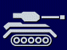
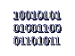
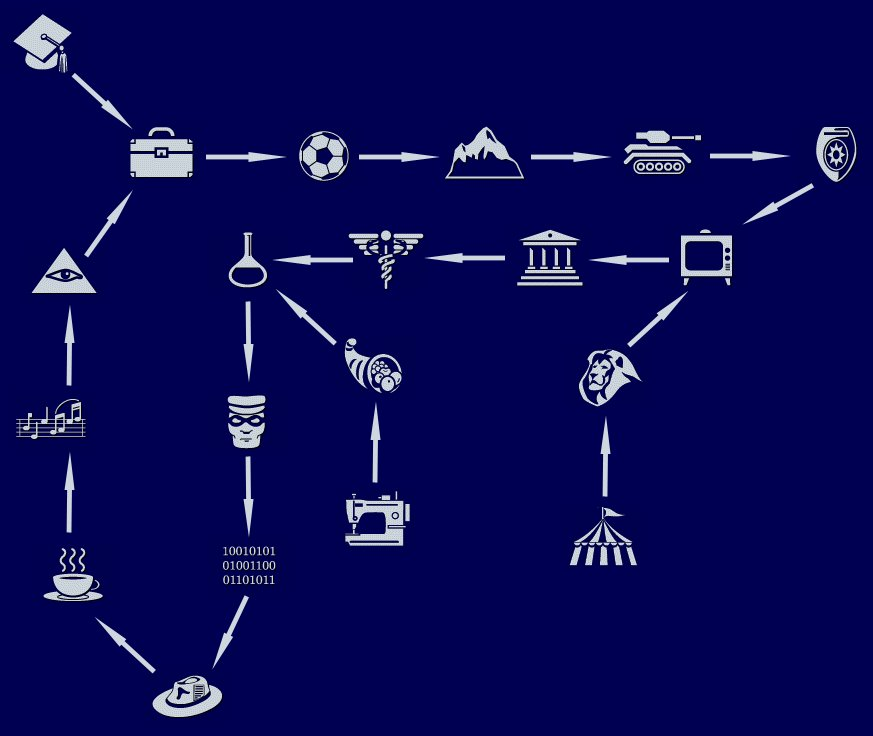

How Careers Work
The basics before you pick a track
Your Sim finds a job by reading the newspaper or checking the computer. One career appears each day – if it’s not the one you want, check again tomorrow. Once hired, your Sim enters at level 1 and works their way up through 10 levels by building skills and making friends.
Each promotion requires a combination of skill points (Cooking, Mechanical, Charisma, Body, Logic, Creativity) and family friends – Sims outside your household who are friends with anyone in your family. Your Sim also needs to leave for work in a decent mood, so keeping needs topped up before the carpool arrives matters just as much as raw skill.
At level 10 of most careers, a chance card will eventually appear offering to move your Sim into a completely different career track at a mid-level position. This isn’t optional if the card fires – your Sim switches automatically. The transfer destinations form a loop connecting all careers. See the Career Transfer Loop section below for the full map.
Base Game Careers
10 career tracks – available from the start
Click any career to expand the full promotion ladder.
| Lvl | Title | §/day | Hours | Skills needed | Friends |
|---|---|---|---|---|---|
| 1 | Mailroom Clerk | §120 | 9am–3pm (09:00–15:00) | – | 0 |
| 2 | Executive Assistant | §180 | 9am–4pm (09:00–16:00) | – | 0 |
| 3 | Field Sales Representative | §250 | 9am–4pm (09:00–16:00) | Mech 2 | 0 |
| 4 | Junior Executive | §320 | 9am–4pm (09:00–16:00) | Mech 2, Char 2 | 1 |
| 5 | Executive | §400 | 9am–4pm (09:00–16:00) | Mech 2, Char 2, Log 2 | 3 |
| 6 | Senior Manager | §520 | 9am–4pm (09:00–16:00) | Mech 2, Char 3, Log 3, Cre 2 | 6 |
| 7 | Vice President | §660 | 9am–5pm (09:00–17:00) | Mech 2, Char 4, Body 2, Log 4, Cre 2 | 8 |
| 8 | President | §800 | 9am–5pm (09:00–17:00) | Mech 2, Char 5, Body 2, Log 6, Cre 3 | 10 |
| 9 | CEO | §950 | 9am–4pm (09:00–16:00) | Mech 2, Char 6, Body 2, Log 7, Cre 5 | 12 |
| 10 | Business Tycoon | §1,200 | 9am–3pm (09:00–15:00) | Mech 2, Char 8, Body 2, Log 9, Cre 6 | 14 |
| Lvl | Title | §/day | Hours | Skills needed | Friends |
|---|---|---|---|---|---|
| 1 | Waiter/Waitress | §100 | 9am–3pm (09:00–15:00) | – | 0 |
| 2 | Extra | §150 | 9am–3pm (09:00–15:00) | – | 0 |
| 3 | Bit Player | §200 | 9am–3pm (09:00–15:00) | Char 2 | 0 |
| 4 | Stunt Double | §275 | 9am–4pm (09:00–16:00) | Char 2, Body 2 | 2 |
| 5 | B-Movie Star | §375 | 10am–5pm (10:00–17:00) | Char 3, Body 3, Cre 1 | 4 |
| 6 | Supporting Player | §500 | 10am–6pm (10:00–18:00) | Mech 1, Char 4, Body 4, Cre 2 | 6 |
| 7 | TV Star | §650 | 10am–6pm (10:00–18:00) | Mech 1, Char 6, Body 5, Cre 4 | 8 |
| 8 | Feature Star | §900 | 5pm–1am (17:00–01:00) | Mech 2, Char 7, Body 6, Cre 4 | 10 |
| 9 | Broadway Star | §1,100 | 10am–5pm (10:00–17:00) | Mech 2, Char 8, Body 7, Cre 7 | 12 |
| 10 | Superstar | §1,400 | 10am–3pm (10:00–15:00) | Mech 2, Char 10, Body 8, Cre 10 | 14 |
| Lvl | Title | §/day | Hours | Skills needed | Friends |
|---|---|---|---|---|---|
| 1 | Security Guard | §240 | 12am–6am (00:00–06:00) | – | 0 |
| 2 | Cadet | §320 | 9am–3pm (09:00–15:00) | – | 0 |
| 3 | Patrol Officer | §380 | 5pm–1am (17:00–01:00) | Body 2 | 0 |
| 4 | Desk Sergeant | §440 | 9am–3pm (09:00–15:00) | Mech 2, Body 2 | 1 |
| 5 | Vice Squad | §490 | 10pm–4am (22:00–04:00) | Mech 3, Body 4 | 2 |
| 6 | Detective | §540 | 9am–3pm (09:00–15:00) | Cook 1, Mech 3, Char 1, Body 5, Log 1 | 4 |
| 7 | Lieutenant | §590 | 9am–3pm (09:00–15:00) | Cook 1, Mech 3, Char 2, Body 5, Log 3, Cre 1 | 6 |
| 8 | SWAT Team Leader | §625 | 9am–3pm (09:00–15:00) | Cook 1, Mech 4, Char 3, Body 6, Log 5, Cre 1 | 8 |
| 9 | Police Chief | §650 | 9am–5pm (09:00–17:00) | Cook 1, Mech 4, Char 4, Body 7, Log 7, Cre 3 | 10 |
| 10 | Captain Hero | §700 | 10am–5pm (10:00–17:00) | Cook 1, Mech 4, Char 6, Body 7, Log 10, Cre 5 | 12 |
| Lvl | Title | §/day | Hours | Skills needed | Friends |
|---|---|---|---|---|---|
| 1 | Pickpocket | §140 | 9am–3pm (09:00–15:00) | – | 0 |
| 2 | Bagman | §200 | 11pm–7am (23:00–07:00) | – | 0 |
| 3 | Bookie | §275 | 12pm–7pm (12:00–19:00) | Body 2 | 0 |
| 4 | Con Artist | §350 | 9am–3pm (09:00–15:00) | Char 1, Body 2, Cre 1 | 2 |
| 5 | Getaway Driver | §425 | 5pm–1am (17:00–01:00) | Mech 2, Char 2, Body 2, Cre 1 | 3 |
| 6 | Bank Robber | §530 | 3pm–11pm (15:00–23:00) | Mech 3, Char 3, Body 3, Log 1, Cre 1 | 4 |
| 7 | Cat Burglar | §640 | 9pm–3am (21:00–03:00) | Cook 1, Mech 3, Char 3, Body 5, Log 2, Cre 2 | 6 |
| 8 | Counterfeiter | §760 | 9am–3pm (09:00–15:00) | Cook 1, Mech 5, Char 3, Body 5, Log 3, Cre 4 | 8 |
| 9 | Smuggler | §900 | 9am–3pm (09:00–15:00) | Cook 1, Mech 5, Char 6, Body 6, Log 3, Cre 5 | 10 |
| 10 | Criminal Mastermind | §1,100 | 6pm–12am (18:00–00:00) | Cook 2, Mech 5, Char 7, Body 6, Log 4, Cre 8 | 12 |
| Lvl | Title | §/day | Hours | Skills needed | Friends |
|---|---|---|---|---|---|
| 1 | Medical Technician | §200 | 9am–3pm (09:00–15:00) | – | 0 |
| 2 | Paramedic | §275 | 11pm–5am (23:00–05:00) | – | 0 |
| 3 | Nurse | §340 | 9am–3pm (09:00–15:00) | Mech 2 | 0 |
| 4 | Intern | §410 | 9am–6pm (09:00–18:00) | Mech 2, Body 2 | 2 |
| 5 | Resident | §480 | 9pm–4am (21:00–04:00) | Mech 3, Body 2, Log 2 | 3 |
| 6 | GP | §550 | 10am–6pm (10:00–18:00) | Mech 3, Char 1, Body 2, Log 4 | 4 |
| 7 | Specialist | §625 | 10am–4pm (10:00–16:00) | Mech 4, Char 2, Body 4, Log 4, Cre 1 | 5 |
| 8 | Surgeon | §700 | 10am–4pm (10:00–16:00) | Mech 4, Char 3, Body 5, Log 6, Cre 2 | 7 |
| 9 | Medical Researcher | §775 | 9am–4pm (09:00–16:00) | Mech 5, Char 4, Body 6, Log 8, Cre 3 | 9 |
| 10 | Chief of Hospital Staff | §850 | 9am–4pm (09:00–16:00) | Mech 6, Char 6, Body 7, Log 9, Cre 4 | 11 |

§250 → §650 ▸| Lvl | Title | §/day | Hours | Skills needed | Friends |
|---|---|---|---|---|---|
| 1 | Recruit | §250 | 6am–12pm (06:00–12:00) | – | 0 |
| 2 | Elite Forces | §325 | 7am–1pm (07:00–13:00) | – | 0 |
| 3 | Drill Instructor | §400 | 8am–2pm (08:00–14:00) | Body 2 | 0 |
| 4 | Junior Officer | §450 | 9am–3pm (09:00–15:00) | Mech 1, Char 2, Body 2 | 0 |
| 5 | Counter Intelligence | §500 | 9am–3pm (09:00–15:00) | Cook 1, Mech 1, Char 2, Body 4 | 0 |
| 6 | Flight Officer | §550 | 9am–3pm (09:00–15:00) | Cook 1, Mech 2, Char 4, Body 4, Log 1 | 1 |
| 7 | Senior Officer | §580 | 9am–3pm (09:00–15:00) | Cook 1, Mech 3, Char 5, Body 4, Log 3 | 3 |
| 8 | Commander | §600 | 9am–3pm (09:00–15:00) | Cook 1, Mech 6, Char 6, Body 4, Log 5 | 5 |
| 9 | Astronaut | §625 | 9am–3pm (09:00–15:00) | Cook 1, Mech 9, Char 6, Body 8, Log 6 | 6 |
| 10 | General | §650 | 9am–3pm (09:00–15:00) | Cook 1, Mech 10, Char 8, Body 10, Log 9 | 8 |
| Lvl | Title | §/day | Hours | Skills needed | Friends |
|---|---|---|---|---|---|
| 1 | Campaign Worker | §220 | 9am–6pm (09:00–18:00) | – | 0 |
| 2 | Intern | §300 | 9am–3pm (09:00–15:00) | – | 0 |
| 3 | Lobbyist | §360 | 9am–3pm (09:00–15:00) | Char 2 | 0 |
| 4 | Campaign Manager | §430 | 9am–6pm (09:00–18:00) | Char 2, Log 1 | 2 |
| 5 | City Council Member | §485 | 9am–3pm (09:00–15:00) | Char 3, Body 1, Log 1 | 4 |
| 6 | State Assemblyman / State Assemblywoman | §540 | 9am–4pm (09:00–16:00) | Char 4, Body 2, Log 1, Cre 1 | 6 |
| 7 | Congressman / Congresswoman | §600 | 10am–2pm (10:00–14:00) | Char 4, Body 3, Log 3, Cre 2 | 9 |
| 8 | Judge | §650 | 10am–2pm (10:00–14:00) | Char 5, Body 4, Log 4, Cre 3 | 11 |
| 9 | Senator | §700 | 9am–6pm (09:00–18:00) | Char 6, Body 5, Log 6, Cre 4 | 14 |
| 10 | Mayor | §750 | 9am–3pm (09:00–15:00) | Char 9, Body 5, Log 7, Cre 5 | 17 |
| Lvl | Title | §/day | Hours | Skills needed | Friends |
|---|---|---|---|---|---|
| 1 | Team Mascot | §110 | 12pm–6pm (12:00–18:00) | – | 0 |
| 2 | Minor Leaguer | §170 | 9am–3pm (09:00–15:00) | – | 0 |
| 3 | Rookie | §230 | 9am–3pm (09:00–15:00) | Body 2 | 0 |
| 4 | Starter | §300 | 9am–3pm (09:00–15:00) | Body 5 | 1 |
| 5 | All-Star | §385 | 9am–3pm (09:00–15:00) | Mech 1, Char 1, Body 6 | 3 |
| 6 | MVP | §510 | 9am–3pm (09:00–15:00) | Mech 2, Char 2, Body 7 | 5 |
| 7 | Superstar | §680 | 9am–4pm (09:00–16:00) | Cook 1, Mech 2, Char 3, Body 8 | 7 |
| 8 | Assistant Coach | §850 | 9am–2pm (09:00–14:00) | Cook 2, Mech 2, Char 4, Body 9, Cre 1 | 9 |
| 9 | Coach | §1,000 | 9am–3pm (09:00–15:00) | Cook 3, Mech 2, Char 6, Body 10, Cre 2 | 11 |
| 10 | Hall of Famer | §1,300 | 9am–3pm (09:00–15:00) | Cook 4, Mech 2, Char 9, Body 10, Cre 3 | 13 |
| Lvl | Title | §/day | Hours | Skills needed | Friends |
|---|---|---|---|---|---|
| 1 | Test Subject | §155 | 9am–3pm (09:00–15:00) | – | 0 |
| 2 | Lab Assistant | §230 | 11pm–5am (23:00–05:00) | – | 0 |
| 3 | Field Researcher | §320 | 9am–3pm (09:00–15:00) | Log 2 | 0 |
| 4 | Science Teacher | §375 | 9am–4pm (09:00–16:00) | Char 1, Log 3 | 1 |
| 5 | Project Leader | §450 | 10am–5pm (10:00–17:00) | Char 2, Log 4, Cre 1 | 3 |
| 6 | Inventor | §540 | 10am–7pm (10:00–19:00) | Mech 2, Char 2, Log 4, Cre 3 | 4 |
| 7 | Scholar | §640 | 10am–3pm (10:00–15:00) | Mech 4, Char 2, Log 6, Cre 4 | 5 |
| 8 | Top Secret Researcher | §740 | 10am–3pm (10:00–15:00) | Cook 1, Mech 6, Char 4, Log 7, Cre 4 | 7 |
| 9 | Theorist | §870 | 10am–2pm (10:00–14:00) | Cook 1, Mech 7, Char 4, Log 9, Cre 7 | 8 |
| 10 | Mad Scientist | §1,000 | 10am–2pm (10:00–14:00) | Cook 2, Mech 8, Char 5, Log 10, Cre 10 | 10 |
| Lvl | Title | §/day | Hours | Skills needed | Friends |
|---|---|---|---|---|---|
| 1 | Daredevil | §175 | 9am–3pm (09:00–15:00) | – | 0 |
| 2 | Bungee Jumping Instructor | §250 | 9am–3pm (09:00–15:00) | – | 0 |
| 3 | Whitewater Guide | §325 | 9am–3pm (09:00–15:00) | Body 2 | 1 |
| 4 | Xtreme Circuit Pro | §400 | 9am–3pm (09:00–15:00) | Mech 1, Body 4 | 2 |
| 5 | Bush Pilot | §475 | 9am–3pm (09:00–15:00) | Cook 1, Mech 2, Body 4, Log 1 | 3 |
| 6 | Mountain Climber | §550 | 9am–3pm (09:00–15:00) | Cook 1, Mech 4, Body 6, Log 1 | 4 |
| 7 | Photo Journalist | §650 | 9am–3pm (09:00–15:00) | Cook 1, Mech 5, Char 2, Body 6, Log 1, Cre 3 | 5 |
| 8 | Treasure Hunter | §725 | 10am–5pm (10:00–17:00) | Cook 1, Mech 6, Char 3, Body 7, Log 5, Cre 7 | 7 |
| 9 | Grand Prix Driver | §825 | 10am–4pm (10:00–16:00) | Cook 1, Mech 6, Char 5, Body 7, Log 5, Cre 7 | 9 |
| 10 | International Spy | §925 | 11am–5pm (11:00–17:00) | Cook 2, Mech 6, Char 8, Body 8, Log 6, Cre 9 | 11 |
Livin’ Large Careers
5 career tracks added by the first expansion

§120 → §1,550 ▸| Lvl | Title | §/day | Hours | Skills needed | Friends |
|---|---|---|---|---|---|
| 1 | Beta Tester | §120 | 9am–5pm (09:00–17:00) | – | 0 |
| 2 | Support Tech | §150 | 8am–4pm (08:00–16:00) | – | 0 |
| 3 | Web Master | §200 | 6pm–2am (18:00–02:00) | Mech 2 | 0 |
| 4 | Hacker | §240 | 12am–9am (00:00–09:00) | Mech 3, Log 2 | 0 |
| 5 | Security Consultant | §400 | 10am–7pm (10:00–19:00) | Mech 4, Log 4 | 2 |
| 6 | Game Designer | §610 | 2pm–11pm (14:00–23:00) | Mech 4, Log 4, Cre 4 | 3 |
| 7 | Internet Entrepreneur | §800 | 10am–8pm (10:00–20:00) | Mech 4, Log 5, Cre 6 | 5 |
| 8 | Software CEO | §1,100 | 10am–7pm (10:00–19:00) | Mech 4, Char 4, Log 6, Cre 7 | 6 |
| 9 | Venture Capitalist | §1,300 | 11am–8pm (11:00–20:00) | Mech 5, Char 6, Log 7, Cre 9 | 8 |
| 10 | Information Overlord | §1,550 | 11am–8pm (11:00–20:00) | Mech 7, Char 8, Log 10, Cre 10 | 8 |
| Lvl | Title | §/day | Hours | Skills needed | Friends |
|---|---|---|---|---|---|
| 1 | Typesetter | §120 | 4am–12pm (04:00–12:00) | – | 0 |
| 2 | Game Reviewer | §200 | 11am–6pm (11:00–18:00) | – | 0 |
| 3 | Tabloid Writer | §230 | 9am–3pm (09:00–15:00) | Cre 2 | 0 |
| 4 | Paparazzi | §350 | 5pm–1am (17:00–01:00) | Char 2, Cre 2 | 2 |
| 5 | Newspaper Reporter | §420 | 3am–10am (03:00–10:00) | Char 2, Log 2, Cre 4 | 2 |
| 6 | Meteorologist | §510 | 5am–1pm (05:00–13:00) | Char 3, Body 1, Log 3, Cre 5 | 4 |
| 7 | TV Reporter | §660 | 12pm–8pm (12:00–20:00) | Char 6, Body 2, Log 3, Cre 5 | 6 |
| 8 | Investigative Reporter | §850 | 10am–5pm (10:00–17:00) | Char 8, Body 3, Log 4, Cre 5 | 9 |
| 9 | National News Anchor | §975 | 11am–8pm (11:00–20:00) | Char 9, Body 5, Log 5, Cre 6 | 11 |
| 10 | Talk Show Host | §1,200 | 1pm–5pm (13:00–17:00) | Char 10, Body 5, Log 7, Cre 7 | 14 |
| Lvl | Title | §/day | Hours | Skills needed | Friends |
|---|---|---|---|---|---|
| 1 | Subway Musician | §90 | 3pm–8pm (15:00–20:00) | – | 0 |
| 2 | Piano Tuner | §120 | 9am–4pm (09:00–16:00) | – | 0 |
| 3 | Wedding Singer | §190 | 9am–3pm (09:00–15:00) | Cre 2 | 0 |
| 4 | Lounge Singer | §250 | 9pm–4am (21:00–04:00) | Cre 5 | 2 |
| 5 | High School Band Teacher | §325 | 7am–2pm (07:00–14:00) | Mech 2, Cre 6 | 2 |
| 6 | Roadie | §400 | 11am–8pm (11:00–20:00) | Mech 5, Cre 7 | 5 |
| 7 | Backup Musician | §550 | 12pm–9pm (12:00–21:00) | Mech 5, Body 4, Cre 8 | 8 |
| 8 | Studio Musician | §700 | 10am–5pm (10:00–17:00) | Mech 5, Char 2, Body 5, Cre 10 | 9 |
| 9 | Rock Star | §1,100 | 5pm–2am (17:00–02:00) | Mech 5, Char 7, Body 7, Cre 10 | 12 |
| 10 | Celebrity Activist | §1,400 | 10am–3pm (10:00–15:00) | Mech 5, Char 10, Body 7, Log 4, Cre 10 | 15 |
| Lvl | Title | §/day | Hours | Skills needed | Friends |
|---|---|---|---|---|---|
| 1 | Psychic Phone Friend | §100 | 6pm–12am (18:00–00:00) | – | 0 |
| 2 | Conspiracy Theorist | §130 | 11pm–5am (23:00–05:00) | – | 0 |
| 3 | Tarot Card Reader | §200 | 5pm–11pm (17:00–23:00) | Char 1, Cre 2 | 0 |
| 4 | Hypnotist | §300 | 10am–4pm (10:00–16:00) | Char 2, Log 3, Cre 2 | 0 |
| 5 | Medium | §375 | 8pm–2am (20:00–02:00) | Char 2, Log 4, Cre 2 | 3 |
| 6 | Dowser | §480 | 6am–3pm (06:00–15:00) | Char 3, Body 1, Log 5, Cre 2 | 5 |
| 7 | Police Psychic | §600 | 6pm–2am (18:00–02:00) | Mech 1, Char 5, Body 1, Log 5, Cre 3 | 6 |
| 8 | UFO Investigator | §810 | 11pm–6am (23:00–06:00) | Mech 1, Char 6, Body 1, Log 7, Cre 4 | 10 |
| 9 | Exorcist | §1,000 | 10am–3pm (10:00–15:00) | Mech 1, Char 8, Body 1, Log 7, Cre 5 | 13 |
| 10 | Cult Leader | §1,200 | 10am–4pm (10:00–16:00) | Mech 2, Char 10, Body 2, Log 9, Cre 7 | 17 |
| Lvl | Title | §/day | Hours | Skills needed | Friends |
|---|---|---|---|---|---|
| 1 | Golf Caddy | §90 | 5am–10am (05:00–10:00) | – | 0 |
| 2 | Convenience Store Clerk | §110 | 10pm–3am (22:00–03:00) | – | 0 |
| 3 | Life Guard | §150 | 9am–3pm (09:00–15:00) | Body 2 | 1 |
| 4 | Record Store Clerk | §180 | 12pm–5pm (12:00–17:00) | Char 2, Body 2 | 2 |
| 5 | Party D.J. | §220 | 11pm–4am (23:00–04:00) | Char 4, Body 2 | 4 |
| 6 | Projectionist | §280 | 10am–7pm (10:00–19:00) | Mech 3, Char 4, Body 2 | 4 |
| 7 | Video Editor | §350 | 12pm–6pm (12:00–18:00) | Mech 5, Char 4, Body 2 | 7 |
| 8 | Freelance Photographer | §400 | 12pm–5pm (12:00–17:00) | Mech 5, Char 7, Body 3 | 10 |
| 9 | Personal Tour Guide | §450 | 2pm–7pm (14:00–19:00) | Mech 5, Char 8, Body 6 | 12 |
| 10 | Professional Party Guest | §600 | 10pm–2am (22:00–02:00) | Mech 5, Char 10, Body 9 | 15 |
Unleashed Careers
5 career tracks added by the fifth expansion
| Lvl | Title | §/day | Hours | Skills needed | Friends |
|---|---|---|---|---|---|
| 1 | Dog Walker | §100 | 1pm–3pm (13:00–15:00) | – | 0 |
| 2 | Pet Groomer | §160 | 9am–3pm (09:00–15:00) | – | 0 |
| 3 | Sheep Custodian | §185 | 9am–3pm (09:00–15:00) | Cook 1, Char 2 | 1 |
| 4 | Aquarium Technician | §250 | 12pm–5pm (12:00–17:00) | Cook 1, Mech 1, Char 2, Body 1, Cre 1 | 1 |
| 5 | Zoo Keeper | §345 | 6am–12pm (06:00–12:00) | Cook 2, Mech 1, Char 3, Body 1, Cre 1 | 2 |
| 6 | Dolphin Trainer | §435 | 11am–4pm (11:00–16:00) | Cook 2, Mech 2, Char 4, Body 2, Log 1, Cre 1 | 2 |
| 7 | Animal Acting Coach | §560 | 9am–3pm (09:00–15:00) | Cook 2, Mech 2, Char 5, Body 3, Log 2, Cre 2 | 4 |
| 8 | Alligator Relocator | §700 | 2pm–9pm (14:00–21:00) | Cook 3, Mech 3, Char 6, Body 5, Log 5, Cre 4 | 5 |
| 9 | Veterinarian | §780 | 8am–3pm (08:00–15:00) | Cook 4, Mech 4, Char 7, Body 5, Log 5, Cre 4 | 5 |
| 10 | Animal Magician | §1,050 | 6pm–12am (18:00–00:00) | Cook 4, Mech 5, Char 9, Body 6, Log 6, Cre 5 | 8 |
| Lvl | Title | §/day | Hours | Skills needed | Friends |
|---|---|---|---|---|---|
| 1 | Popcorn Vendor | §90 | 4pm–11pm (16:00–23:00) | – | 0 |
| 2 | Ticket Taker | §130 | 3pm–6pm (15:00–18:00) | – | 0 |
| 3 | Midway Carnie | §140 | 3pm–12am (15:00–00:00) | Mech 1, Char 1, Body 1 | 0 |
| 4 | Sideshow Barker | §180 | 3pm–10pm (15:00–22:00) | Mech 1, Char 1, Body 2, Cre 1 | 1 |
| 5 | Clown | §200 | 3pm–11pm (15:00–23:00) | Mech 1, Char 2, Body 4, Cre 1 | 4 |
| 6 | Human Cannonball | §240 | 9am–3pm (09:00–15:00) | Mech 1, Char 4, Body 5, Log 1, Cre 1 | 5 |
| 7 | Acrobat | §500 | 4pm–11pm (16:00–23:00) | Mech 1, Char 5, Body 6, Log 2, Cre 4 | 6 |
| 8 | Trapeze Artist | §610 | 4pm–11pm (16:00–23:00) | Mech 3, Char 6, Body 7, Log 2, Cre 5 | 6 |
| 9 | Lion Tamer | §775 | 4pm–11pm (16:00–23:00) | Cook 1, Mech 3, Char 8, Body 8, Log 3, Cre 5 | 7 |
| 10 | Ringmaster | §815 | 5pm–11pm (17:00–23:00) | Cook 1, Mech 3, Char 9, Body 8, Log 5, Cre 6 | 8 |
| Lvl | Title | §/day | Hours | Skills needed | Friends |
|---|---|---|---|---|---|
| 1 | Dishwasher | §90 | 6am–12pm (06:00–12:00) | – | 0 |
| 2 | Drive Thru Order Taker | §120 | 5am–10am (05:00–10:00) | – | 0 |
| 3 | Fast Food Shift Manager | §130 | 9am–3pm (09:00–15:00) | Cook 2 | 0 |
| 4 | Sous Chef | §180 | 9am–3pm (09:00–15:00) | Cook 3, Mech 2 | 1 |
| 5 | Head Chef | §220 | 9am–3pm (09:00–15:00) | Cook 6, Mech 2, Char 2, Cre 2 | 3 |
| 6 | Restaurant Critic | §335 | 3pm–11pm (15:00–23:00) | Cook 6, Mech 3, Char 4, Cre 3 | 3 |
| 7 | Cookbook Author | §590 | 3pm–11pm (15:00–23:00) | Cook 8, Mech 4, Char 5, Cre 4 | 5 |
| 8 | Restaurateur | §690 | 9am–2pm (09:00–14:00) | Cook 8, Mech 4, Char 7, Cre 5 | 6 |
| 9 | Celebrity Chef | §760 | 3pm–11pm (15:00–23:00) | Cook 10, Mech 4, Char 8, Cre 5 | 9 |
| 10 | Candy Bar Magnate | §930 | 4pm–11pm (16:00–23:00) | Cook 10, Mech 5, Char 10, Cre 6 | 11 |
| Lvl | Title | §/day | Hours | Skills needed | Friends |
|---|---|---|---|---|---|
| 1 | Playground Monitor | §120 | 7am–1pm (07:00–13:00) | – | 0 |
| 2 | Substitute Teacher | §180 | 7am–1pm (07:00–13:00) | – | 0 |
| 3 | Kindergarten Teacher | §190 | 7am–1pm (07:00–13:00) | Cook 1, Cre 1 | 1 |
| 4 | Junior High School Teacher | §210 | 8am–3pm (08:00–15:00) | Cook 1, Char 1, Log 1, Cre 1 | 2 |
| 5 | High School Teacher | §290 | 8am–3pm (08:00–15:00) | Cook 1, Char 2, Log 3, Cre 2 | 2 |
| 6 | Principal | §310 | 8am–3pm (08:00–15:00) | Cook 1, Char 3, Log 5, Cre 3 | 3 |
| 7 | Assistant Professor | §490 | 9am–6pm (09:00–18:00) | Cook 1, Char 4, Log 6, Cre 5 | 4 |
| 8 | Tenured Professor | §600 | 9am–5pm (09:00–17:00) | Cook 1, Char 6, Log 8, Cre 7 | 5 |
| 9 | College Dean | §700 | 9am–3pm (09:00–15:00) | Cook 1, Char 6, Log 9, Cre 9 | 7 |
| 10 | Minister of Education | §900 | 10am–5pm (10:00–17:00) | Cook 1, Char 6, Log 10, Cre 10 | 9 |
| Lvl | Title | §/day | Hours | Skills needed | Friends |
|---|---|---|---|---|---|
| 1 | Department Store Clerk | §130 | 9am–3pm (09:00–15:00) | – | 0 |
| 2 | Tailor | §190 | 9am–3pm (09:00–15:00) | – | 0 |
| 3 | Makeup Artist | §210 | 9am–3pm (09:00–15:00) | Char 1, Cre 1 | 1 |
| 4 | Painter's Model | §235 | 12pm–3pm (12:00–15:00) | Cook 1, Char 2, Body 1, Cre 1 | 1 |
| 5 | Fashion Photographer | §450 | 11am–4pm (11:00–16:00) | Cook 1, Mech 1, Char 2, Body 1, Cre 2 | 2 |
| 6 | Tradeshow Model | §600 | 5pm–1am (17:00–01:00) | Cook 1, Mech 1, Char 4, Body 3, Cre 4 | 3 |
| 7 | Runway Model | §650 | 1pm–10pm (13:00–22:00) | Cook 1, Mech 1, Char 6, Body 5, Cre 5 | 4 |
| 8 | Supermodel | §875 | 11am–4pm (11:00–16:00) | Cook 1, Mech 1, Char 8, Body 7, Cre 6 | 5 |
| 9 | Fashion Columnist | §1050 | 5pm–11pm (17:00–23:00) | Cook 1, Mech 1, Char 10, Body 9, Cre 7 | 6 |
| 10 | Fashion Designer | §1350 | 4pm–11pm (16:00–23:00) | Cook 1, Mech 1, Char 10, Body 10, Cre 8 | 7 |
Fame (Superstar)
A completely different career system
The Fame career from the Superstar expansion doesn’t follow the standard 10-level structure. Instead, fame is tracked by a 5-star Star Power rating that increases or decreases in half-star increments based on your Sim’s performances in Studio Town.
To enter the Fame career, your Sim signs up at the SimCity Talent Agency via the Studio Town tabloid (delivered by Nancy the Paper Girl). There are no set work hours – your Sim travels to Studio Town and performs using fame-related objects to earn money and build their star rating.
| Stars | Title | §/job | Skills needed | Star Power |
|---|---|---|---|---|
| 0 | Nobody | Tips | – | 0 |
| 0.5 | Stepping Stone | §50 | – | 0 |
| 1 | Insider | §65 | Char 1, Cre 1 | 0 |
| 1.5 | Name Dropper | §80 | Char 2, Body 1, Cre 2 | 0 |
| 2 | Studio Fly | §100 | Char 3, Body 2, Cre 3 | 0 |
| 2.5 | Sell Out | §150 | Char 4, Body 3, Cre 4 | 2 |
| 3 | Trendsetter | §200 | Char 6, Body 4, Cre 4 | 4 |
| 3.5 | Player | §325 | Char 6, Body 5, Cre 6 | 7 |
| 4 | Talk of the Town | §425 | Char 7, Body 6, Cre 7 | 11 |
| 4.5 | Celebrity | §750 | Char 8, Body 7, Cre 8 | 14 |
| 5 | Superstar | §1000 | Char 10, Body 8, Cre 9 | 18 |
Career Transfer Loop
Where each career sends you at level 10
When your Sim reaches the top of their career (level 10), a chance card will eventually appear that moves them into a different career track at a mid-level position. This happens automatically – your Sim can’t decline. The skills they’ve built will often transfer well to the new track, but the friend requirements and remaining skill gaps may still need work.

Image source: Sims Fandom Wiki ↗
Tips & Strategy
move_objects mood reset trick – see the Cheats page for details.QoL mods that affect careers
These mods from the Must-Have Mods page can make career progression easier or remove restrictions entirely.
Sources & Credits
The career data on this page was compiled from multiple community sources and cross-referenced for accuracy.
Career icons: Exported from the game using Career Creator 3. EP icons by sairitvs on DeviantArt ↗. Career transfer loop diagram from the Sims Fandom Wiki ↗.